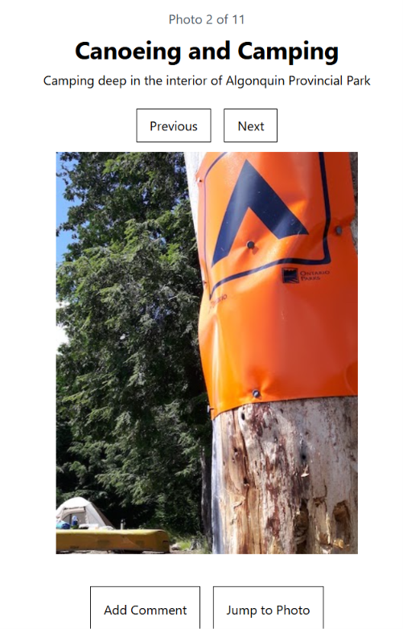
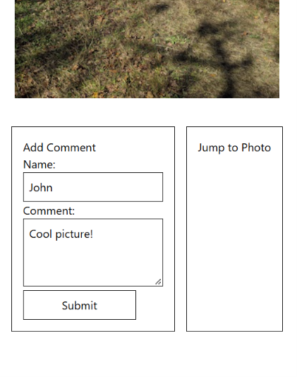
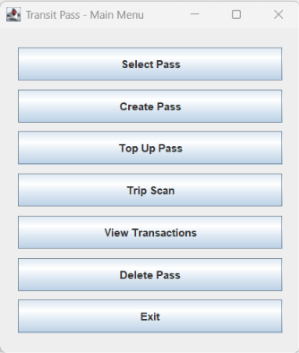
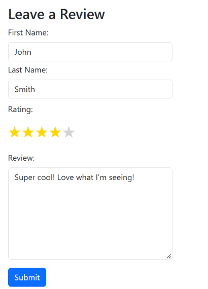

Photo Album Web Application
Developed a photo album web application using React and TypeScript. The application allows users to browse image collections through an interactive and responsive interface while demonstrating component-based development, state management, and front-end design principles.
Technologies: React, TypeScript, HTML, CSS, Next.js
Transit Pass Management System
Developed a desktop application in Java that simulates a public transit pass system. Users can create and manage transit passes, add funds, perform trip scans, view transaction history, and delete passes. The application follows the Model-View-Controller (MVC) design pattern and stores data between sessions using file serialization.
Technologies: Java, MVC Design Pattern, File Serialization
Review Website
Developed a product review web application using ASP.NET MVC, C#, and MySQL. Users can submit reviews, provide star ratings, and leave comments through a responsive interface. The application validates user input, stores review data in a MySQL database, and dynamically displays customer feedback with a custom interactive star rating system.
Technologies: ASP.NET MVC, C#, MySQL, HTML, CSS, JavaScript



